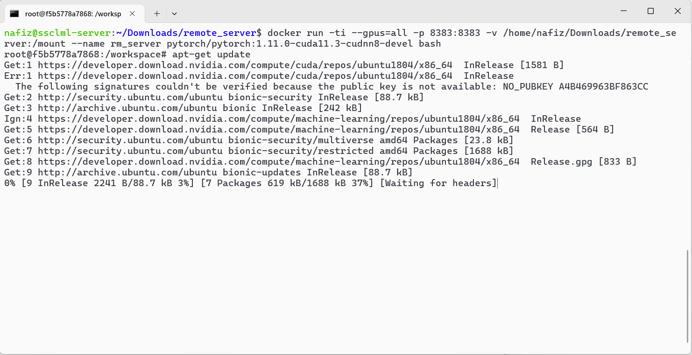

Use remote GPU server from Jupyter
• 2 minutes read | • 🕮 247 words
Often, we need to use a GPU with a remote connection for our daily "ML" life. In this post, we will explore how to connect your Jupyter Notebook to a remote GPU. Every command is included, along with screenshots. Follow these steps to use a remote GPU from your local machine.
First lets check the GPU of our local machine. My local machine is running on windows and the remote machine I am trying to use is running on Linux. For checking the GPU in windowsm the command is,
wmic path win32_VideoController get name
Now I will ssh into the remote machine
ssh username@ip_address
Check the GPU of the remote machine
nvidia-smi
Lets check if docker is installed properly. You will see something like this if it is properly installed.
docker
From docker hub we will find a suitable image for our task. I am using a pytorch image for this demo purpose.
Now lets make a container.
docker run -ti --gpus=all -p (port_number):(port_number) -v (local_directory):(docker_directory) --name (name_of_the_container) (image_tag) bash
As this image was previously downloaded onto the remote machine, Docker found it locally and did not need to download it again. If Docker couldn't find it locally, it would automatically download the image.
Lets break down this command.
- 'docker run': This initiates a new Docker container.
- '-ti': These are flags for running the container in interactive mode (-i), and allocating a pseudo-Terminal (-t), which basically means you can interact with the container through your terminal.
- '--gpus=all': This flag indicates that the container should have access to all available GPUs on the host system. It's specifying GPU resources for the container.
- '-p 8383:8383': This flag maps port 8383 on the host machine to port 8383 within the Docker container. This is often used for networking, allowing processes inside the container to be accessible from the host system.
- '-v /home/nafiz/Downloads/remote_server/:/mount': This flag mounts the directory '/home/nafiz/Downloads/remote_server/' from the host system to the '/mount' directory inside the container. This allows sharing files or directories between the host and the container.
- '--name rm_server' This flag assigns the name "rm_server" to the container.
- 'pytorch/pytorch:1.11.0-cuda11.3-cudnn8-devel': This is the Docker image used to create the container. It's pulling the image named pytorch/pytorch with the tag 1.11.0-cuda11.3-cudnn8-devel, which means it's a PyTorch image with CUDA version 11.3 and cuDNN version 8, suitable for development (-devel).
- 'bash': This specifies the command to run inside the container. In this case, it's starting an interactive Bash shell.
Update the packages of this container
apt-get update
Install nano. Nano is a simple and user-friendly command-line text editor for Unix-like operating systems.
apt-get install nano
Now install Jupyter. In this image jupyter notebook was not installed. Before installing anything check whether that is installed in the image or not.
pip install notebook
now we will make a bash script to run jupyter notebook. We installed nano to make this bash script.
nano run.sh
After the command you will see a interface like this.
Write this command in the nano text editor.
jupyter notebook --no-browser --ip 0.0.0.0 --port=8383 --allow-root
Press Ctrl+s then Ctrl+x to save and exit nano. We will explain later why we are using a bash script instead of running the jupyter command from terminal.
The breakdown of the command is,
- 'jupyter notebook': This is the command to start the Jupyter Notebook server, which is a web-based interactive computing platform.
- '--no-browser': This option tells the Jupyter Notebook server not to attempt to open the notebook interface in a web browser automatically. This is useful if you're accessing the server remotely or if you prefer to manually open the interface later.
- '--ip 0.0.0.0': This option sets the IP address that the server will listen on. In this case,
0.0.0.0means it will listen on all available network interfaces. This allows the server to be accessed from any network interface on the machine. - '--port=8383': This option specifies the port number that the server will listen on. In this case, it's set to port 8383. You can choose any available port number.
- '--allow-root': This option allows the Jupyter Notebook server to be run by the root user. By default, Jupyter prevents running as root for security reasons, but sometimes it's necessary, especially for system-wide installations.
Now we will setup a password for jupyter notebook.
jupyter notebook password
Run this command and press enter two times
nohup bash run.sh > note.log &
Breakdown of the command is,
- jupyter notebook: This is the command to start the Jupyter Notebook server, which is a web-based interactive computing platform.
- --no-browser: This option tells the Jupyter Notebook server not to attempt to open the notebook interface in a web browser automatically. This is useful if you're accessing the server remotely or if you prefer to manually open the interface later.
- --port=8383: This option specifies the port number that the server will listen on. In this case, it's set to port 8383. You can choose any available port number.
- --allow-root: This option allows the Jupyter Notebook server to be run by the root user. By default, Jupyter prevents running as root for security reasons, but sometimes it's necessary, especially for system-wide installations.
So, putting it all together, the command nohup bash run.sh > note.log & runs the run.sh script in the background, redirects its output to a file named note.log, and ensures that it continues running even after the current terminal session ends. If you exit the container even the remote machine, the script will be still running.
Now go to your browser. Enter the ip address of the remote machine and the port number. You will see something like this.
Enter the password you setuped earlier. If you do not setup a password, jupyter will ask for a token.
You can get this token if you run the jupyter command from the terminal.
But in this process the terminal won't be free. You cannot exit or traverse the directories. After entering the password you will get a interface like this.
Create a notebook and run this code to check GPU. Make sure pytorch is installed in your image/container. In my case it was present in the image.
import torch
torch.cuda.get_device_name(0)
DONE! You are now ready to utilize the remote GPU with your local machine. You can exit the container even the exit the ssh, jupyter notebook server will be running.